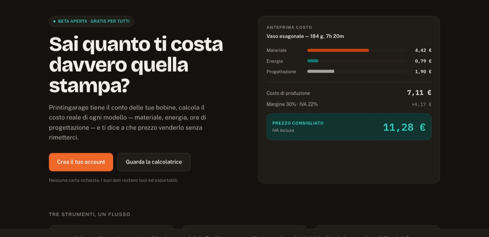
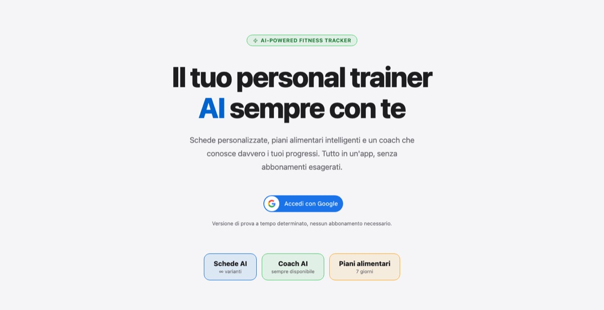
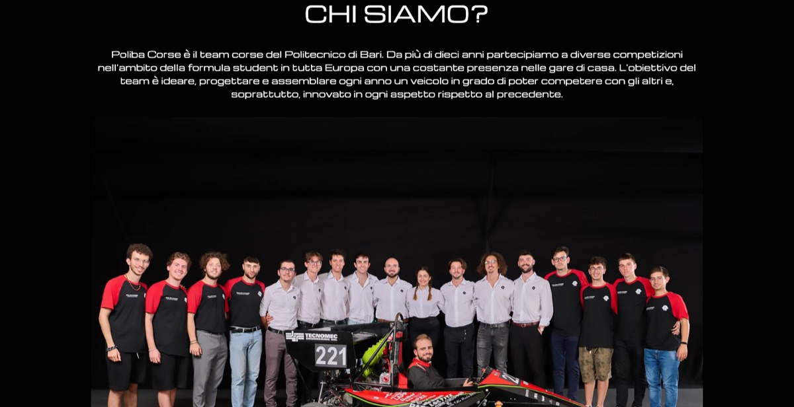
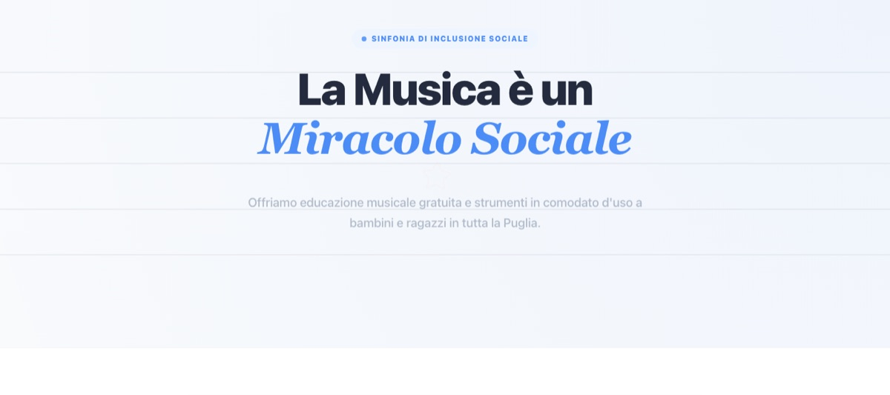
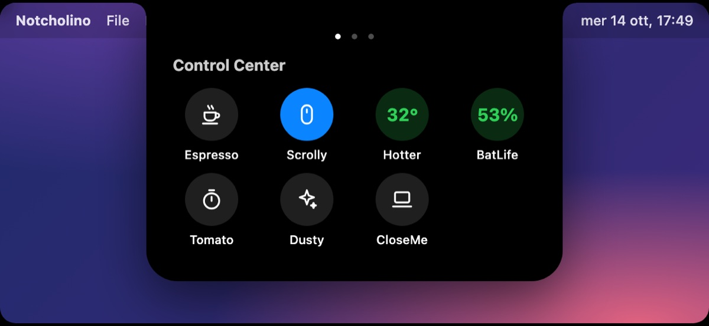
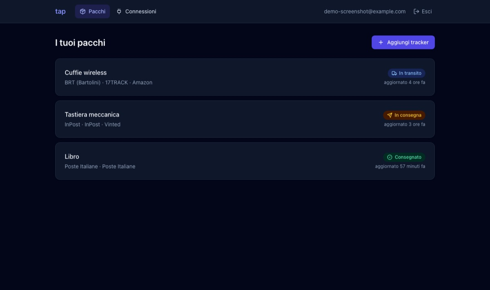

printingarage.it

Printingarage
Tracks your filament spools and works out the real cost of every 3D print (material, energy and design time), so you sell at the right price. Models can be shared with a link.
I build backend systems, AI tools and websites that work well and look right. Software developer at GD Services, computer science student at the University of Bari, and a maker at heart.
I'm Giuseppe, a software developer from Puglia. At GD Services I work in the Research and Development team on backend software in Python and React, designing APIs and MCP servers and building AI solutions.
Before that I built full-stack products with Python, Django, AWS and React at Innovabile (foodu.it). I'm finishing my BSc in Computer Science at the University of Bari, and I started on embedded systems and robotics at school.
Outside of work I make things: I founded Carbonium, a team of makers, and print.in.garage, I design websites for associations and small businesses, and I play guitar, violin and piano.
I work directly with associations, small businesses and professionals who want a site that is fast, clear and easy to keep up to date. I take care of everything, from the first sketch to what comes after the launch.
A custom look built around your content and your audience, not a recycled template.
Mobile first, quick to load and easy to use for everyone.
Search basics, privacy and cookie rules done properly from the start.
Updates, fixes and new features when you need them, with a person who knows the code.
Sites I built for associations and teams, and two products of my own that I am still growing.

Tracks your filament spools and works out the real cost of every 3D print (material, energy and design time), so you sell at the right price. Models can be shared with a link.

An AI personal trainer: personalised workout plans, a coach that knows your progress and weekly meal plans, in one app with Google sign-in.

The new website of the Formula SAE team of the Politecnico di Bari, which designs and builds a race car every year. I developed it as a member of the team.

The website of an association that runs a social orchestra and offers free music education and instruments on loan to children and teenagers across Puglia.
Frameworks, apps and experiments, with the code on GitHub. Stars and activity are read live from GitHub.



A desktop file manager that finds documents by meaning, not by path: it indexes your files, searches by keyword and by vector, and tags them with AI.
A multi-agent framework coordinated by a lead agent, with plugins, long-term memory in a vector database and a knowledge graph, running on local LLMs.
A browser IDE for learning Python. The code runs in the browser, and a Socratic AI tutor explains your errors with hints instead of giving the answer.
A digital atlas of your experiences: map where you have been, unlock achievements based on the Fibonacci sequence and share journeys with others.
Also on GitHub: small games like SpaceInvaders-cpp (C++, SFML) and Tales of Time (Godot), and a virtual tabletop for role-playing, AnD.
Looking for a developer, or for a website for your business or association? Write to me and I will get back to you.
My CV: English (PDF) · Italiano (PDF)